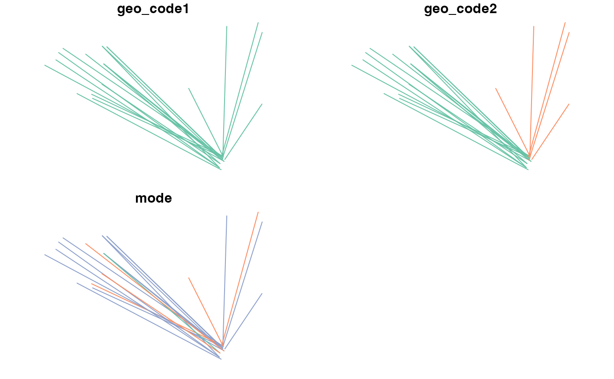
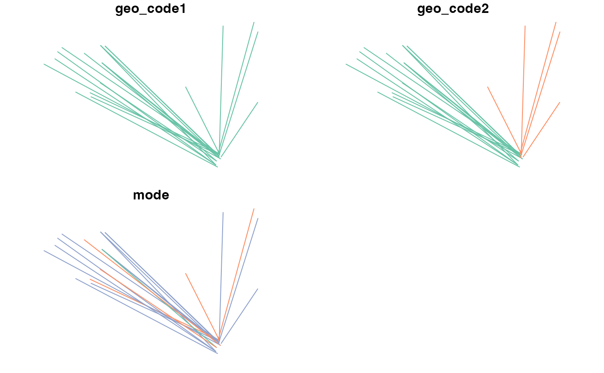

Generate A/B Street Scenario objects by disaggregating aggregate OD data
Source:R/ab_scenario.R
ab_scenario.RdThis function takes a data frame representing origin-destination trip data in 'long' form, zones and, optionally, buildings from where trips can start and end as inputs.
ab_scenario(
od,
zones,
zones_d = NULL,
origin_buildings = NULL,
destination_buildings = NULL,
pop_var = 3,
time_fun = ab_time_normal,
output = "sf",
modes = c("Walk", "Bike", "Transit", "Drive"),
...
)Arguments
- od
Origin destination data with the first 2 columns containing zone code of origin and zone code of destination. Subsequent columns should be mode names such as All and Walk, Bike, Transit, Drive, representing the number of trips made by each mode of transport for use in A/B Street.
- zones
Zones with IDs that match the desire lines. Class:
sf.- zones_d
Optional destination zones with IDs that match the second column of the
oddata frame (work in progress)- origin_buildings
Polygons where trips will originate (
sfobject)- destination_buildings
Polygons where trips can end, represented as
sfobject- pop_var
The variable containing the total population of each desire line.
- time_fun
The function used to calculate departure times.
ab_time_normal()by default.- output
Which output format?
"sf"(default) and"json_list"return R objects. A file name such as"baseline.json"will save the resulting scenario to a file.- modes
Character string containing the names of the modes of travel to include in the outputs. These must match column names in the
odinput data frame. The default isc("Walk", "Bike", "Drive", "Transit"), matching the mode names allowed in the A/B Street scenario schema.- ...
Additional arguments to pass to
ab_json()
Value
An sf object by default representing individual trips
between randomly selected points (or buildings when available)
between the zones represented in the OD data.
Examples
od = leeds_od
zones = leeds_zones
od[[1]] = c("E02006876")
ablines = ab_scenario(od, zones = zones)
#> 0 origins with no match in zone ids
#> 0 destinations with no match in zone ids
#> points not in od data removed.
plot(ablines)
 table(ablines$mode)
#>
#> Bike Drive Transit Walk
#> 1 2 3 15
colSums(od[3:7]) # 0.17 vs 0.05 for ab_scenario
#> All Walk Bike Drive Transit
#> 21 15 1 2 3
ablines = ab_scenario(od, zones = zones, origin_buildings = leeds_buildings)
#> Warning: st_centroid assumes attributes are constant over geometries
#> 0 origins with no match in zone ids
#> 0 destinations with no match in zone ids
#> points not in od data removed.
plot(leeds_zones$geometry)
plot(leeds_buildings$geometry, add = TRUE)
plot(ablines["mode"], add = TRUE)
table(ablines$mode)
#>
#> Bike Drive Transit Walk
#> 1 2 3 15
colSums(od[3:7]) # 0.17 vs 0.05 for ab_scenario
#> All Walk Bike Drive Transit
#> 21 15 1 2 3
ablines = ab_scenario(od, zones = zones, origin_buildings = leeds_buildings)
#> Warning: st_centroid assumes attributes are constant over geometries
#> 0 origins with no match in zone ids
#> 0 destinations with no match in zone ids
#> points not in od data removed.
plot(leeds_zones$geometry)
plot(leeds_buildings$geometry, add = TRUE)
plot(ablines["mode"], add = TRUE)
 ablines_json = ab_json(ablines, scenario_name = "test")
#> Default scenario name of 'test' used.
#> Warning: Unknown or uninitialised column: `departure`.
#> Warning: Unknown or uninitialised column: `person`.
#> Warning: Unknown or uninitialised column: `purpose`.
od = leeds_desire_lines
names(od)[4:6] = c("Walk", "Bike", "Drive")
ablines = ab_scenario(
od = od,
zones = leeds_site_area,
zones_d = leeds_zones,
origin_buildings = leeds_houses,
destination_buildings = leeds_buildings,
output = "sf"
)
#> Warning: st_centroid assumes attributes are constant over geometries
#> Warning: st_centroid assumes attributes are constant over geometries
#> 0 origins with no match in zone ids
#> 0 destinations with no match in zone ids
#> points not in od data removed.
plot(ablines)

plot(ablines$geometry)
plot(leeds_site_area$geometry, add = TRUE)
plot(leeds_buildings$geometry, add = TRUE)
ablines_json = ab_json(ablines, scenario_name = "test")
#> Default scenario name of 'test' used.
#> Warning: Unknown or uninitialised column: `departure`.
#> Warning: Unknown or uninitialised column: `person`.
#> Warning: Unknown or uninitialised column: `purpose`.
od = leeds_desire_lines
names(od)[4:6] = c("Walk", "Bike", "Drive")
ablines = ab_scenario(
od = od,
zones = leeds_site_area,
zones_d = leeds_zones,
origin_buildings = leeds_houses,
destination_buildings = leeds_buildings,
output = "sf"
)
#> Warning: st_centroid assumes attributes are constant over geometries
#> Warning: st_centroid assumes attributes are constant over geometries
#> 0 origins with no match in zone ids
#> 0 destinations with no match in zone ids
#> points not in od data removed.
plot(ablines)

plot(ablines$geometry)
plot(leeds_site_area$geometry, add = TRUE)
plot(leeds_buildings$geometry, add = TRUE)